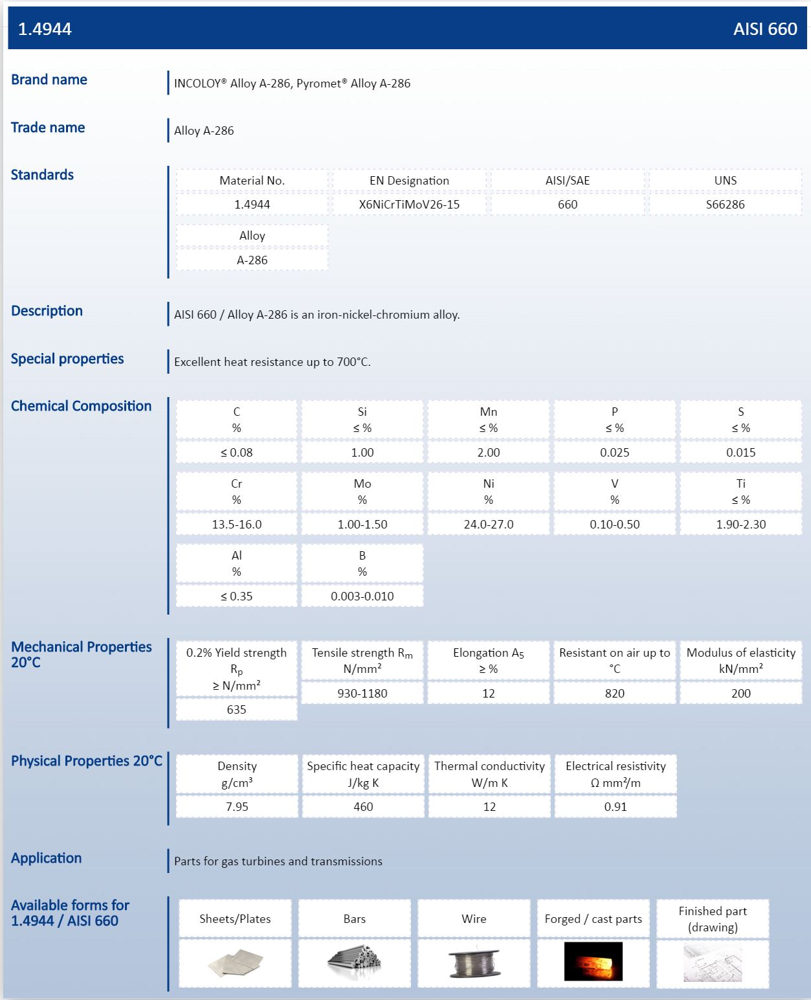

Ref : http://www.metalcor.de/en/datenblatt/72/
http://www.basedosteel.com/en/materials/grades/din-x6nicrtimov26-15.html
1.4944
AISI 660 / Alloy A-286 is an iron-nickel-chromium alloy

DIN X6NiCrTiMoV26-15
| Material | Material Category | Description | Standards | |
|---|---|---|---|---|
| 1.4944 | High-temperature resisting steel and alloy | High-temperature resisting steel and alloy. more | DIN X6NiCrTiMoV26-15, ANFOR Z6NCTDDV25-15,ANFOR EZ6NCT25, UNS S66286 |